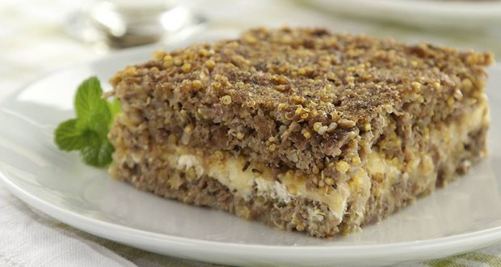

Quibe com Quinoa
Essa receita é perfeita para a sua saúde, pois é assada e livre de glúten.

Tenha uma limentação saudalvel e de qualidade, a empressa Be Health te ajuda a ter uma reeducção alimentar de qualidade; temos nutricionistas para ajudar você nessa nova caminhada
Essa receita é perfeita para a sua saúde, pois é assada e livre de glúten.
Coloque uma panela com água para ferver
Quando estiver em ebulição, coloque a quinoa, tampe e aguarde 10 minutos
Escorra a água e reserve
Numa tigela tempere a carne moída com alho, pimenta, sal e hortelã
Incorpore a quinoa e misture até formar uma massa
Unte o tabuleiro com azeite, espalhe metade da massa, rale a cenoura por cima e coloque a outra metade da massa
Espalhe azeite por cima
Leve ao forno médio por 45 minutos